30天鐵人賽介紹 AWS 雲端世界 - 27: AWS 的雲端緩存服務 ElastiCache
前兩日介紹了關聯式與NoSQL類型的雲端服務，而現今的應用程式架構為了提供良好的彈性、擴充性與高可用性，會根據使用情境運用不同的資料儲存與查詢服務：

今天要來介紹NoSQL另外一種緩存類型的服務。
What is DynamoDB
Amazon Elasticache 是一款內存緩存服務，可選擇 Memcached 或Redis 作為緩存伺服器使用。
提供兩種類型的 cache 架構：
Redis
Redis ( REmote DIctionary Server )是一個開源的內存資料庫系統,它支持數據持久化(也就是你可以把它存在內存中的數據 dump 到硬碟上,以備下次載入 Redis 時使用), 它支持多種抽象的數據結構(字符串、列表、映射、集合、有序集合、位圖,空間索引等)。以功能來說 Redis 的使用情境可能更加豐富。
Memcached
Memcached 是一種開源的，高性能分布式內存對象緩存系統，本質上它是通用的，但最初的目的是通過減輕資料庫負載以加速動態web應用程式, 這也是它現今主要的用途。出道比較早的 Memcached 簡潔且高效,但其簡單的數據類型系統讓它在某些應用場合下不那麼合適

至於這兩種要怎麼選可以參考Memcached vs Redis, Which One to Pick?。但對於筆者來說，除非你打算投入大量資源(金錢)去建立足夠龐大的 Memcached 不然兩者效能是差不多的，以方便上手來說會優先採用 Redis 為主。
這邊附上效能比較(出處Benchmarking Memcached, Redis, and EMS)：
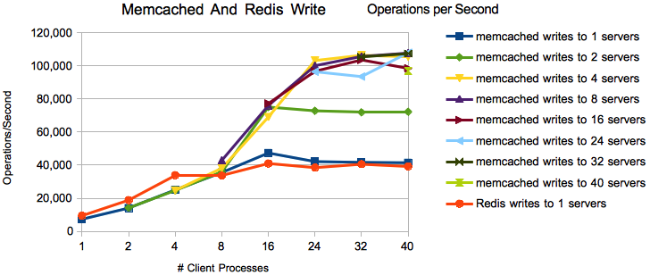
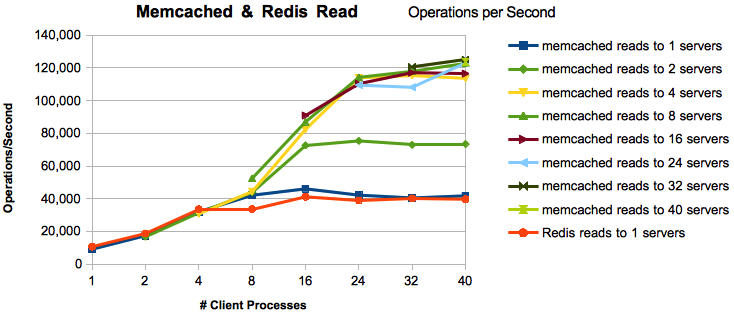
而 ElastiCache : Redis 支援 Backup / Restore，這可以讓我們把 Redis 原本就有的功能放進 AWS 原生 snapshot 。
先前有提到雲端儲存服務因為使用情境有同的類型：
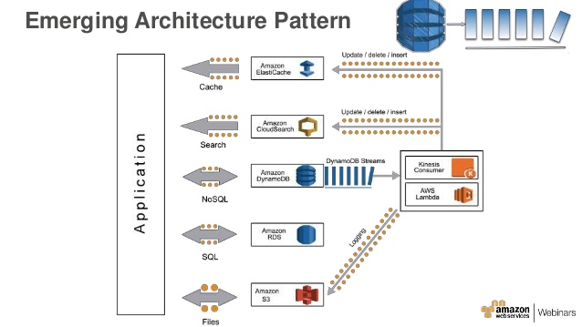
這邊要提醒一下，預設的ElastiCache是提供給 AWS 上的其他服務存放緩存的，不是設計給外部應用程式來存放，所以如果外部要使用要額外設定 VPC 透過 NAT 將封包送進服務內才能使用。
Hands on Lab
我們就一樣透過實際 nodejs 實作整合 ElastiCache 服務，稍有不同的是這次撰寫的 nodejs 應用程式我們需要放在 EC2 實體上才可以存取到 ElastiCache 服務。
Create RDS Instance
首先先登入 [AWS Console] 後在中間的輸入框查詢 ElastiCache ，或是透過左上角的 Services 點選到 Database 下的 Amazon ElastiCache 服務：
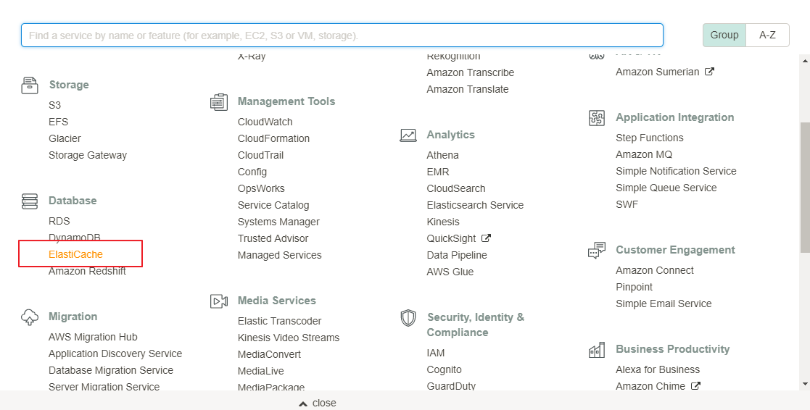
這邊我們使用預設值快速建置，這邊要稍微注意一下設定的 Security Group 與 Subnet*，這跟我們實務上要設定的 *inbound 與 outbound 有關：

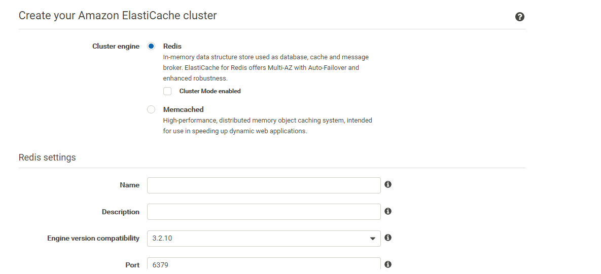
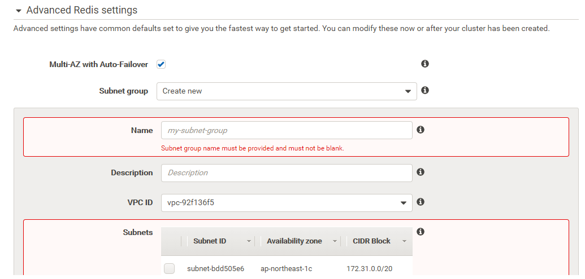
等待服務從 creating 轉至 available 就可以透過 Primary Endpoint 讓 AWS 的其他服務呼叫。
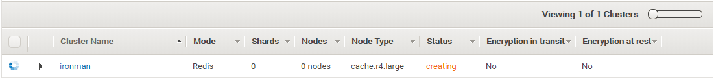
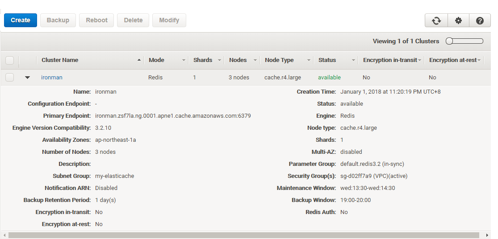
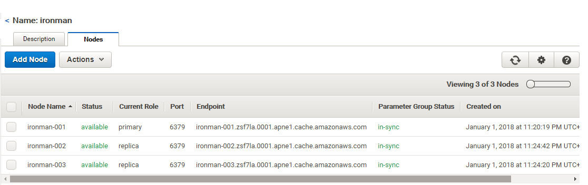
接著要設定 Security Group 的 inbound 打開對應的 port (6379與22)才能成功連線：
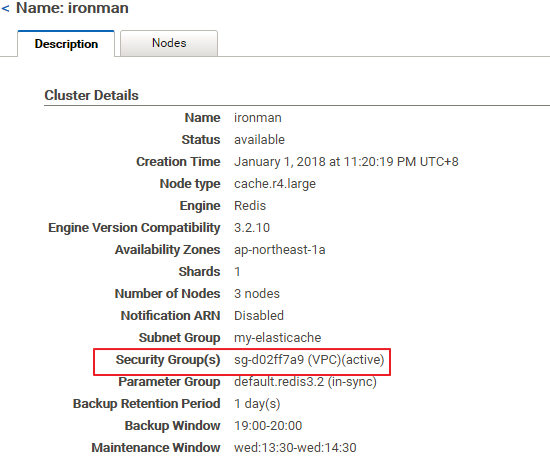
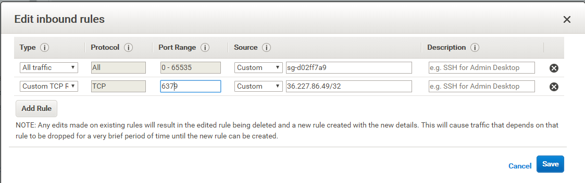
而先前服務建立時也可以選擇用 Cluster 建置：
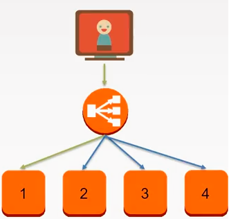
建置 Cluster 服務的節點會變多，價錢稍貴：

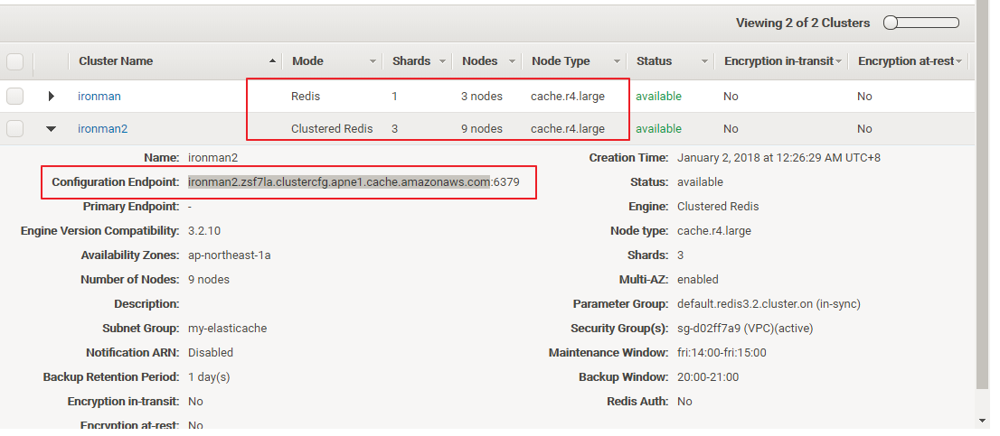
Implment node.js to integrate with ElastiCache
接下來當我們用 ssh/putty 工具連線進入 EC2 內後立即做環境更新並安裝 nodejs：
sudo yum update
curl -o- https://raw.githubusercontent.com/creationix/nvm/v0.33.6/install.sh | bash
. ~/.nvm/nvm.sh
nvm install 6.11.5
node -e "console.log('Running Node.js ' + process.version)"
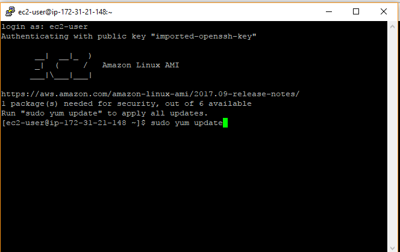
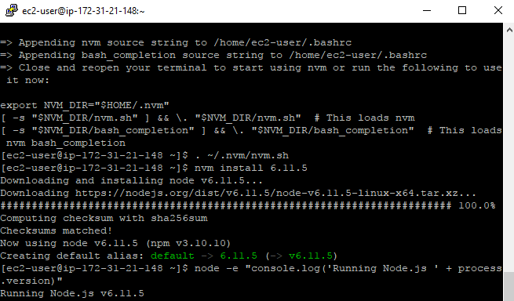
當看到上述版本號字眼代表環境安裝成功，接著我們透過以下指令新增一個資料夾並放入程式：
mkdir app
cd app
npm init -y這邊需要引用 node_redis 作為 client 的 SDK:
npm install redis --save接著透過 vim 我們建立一個 index.js 作為主程式的檔案：
vi index.js新增完後貼上以下內容：
var redis = require("redis");
var client = redis.createClient(6379, 'ironman.zsf7la.ng.0001.apne1.cache.amazonaws.com', {no_ready_check: true});
// if you'd like to select database 3, instead of 0 (default), call
// client.select(3, function() { /* ... */ });
client.on("error", function (err) {
console.log("Error " + err);
});
client.set("string key", "string val", redis.print);
client.hset("hash key", "hashtest 1", "some value", redis.print);
client.hset(["hash key", "hashtest 2", "some other value"], redis.print);
client.hkeys("hash key", function (err, replies) {
console.log(replies.length + " replies:");
replies.forEach(function (reply, i) {
console.log(" " + i + ": " + reply);
});
client.quit();
});最後我們運行起來即可看到下面的結果：
node index.js
程式碼範例：https://github.com/blackie1019/aws-elasticache-example